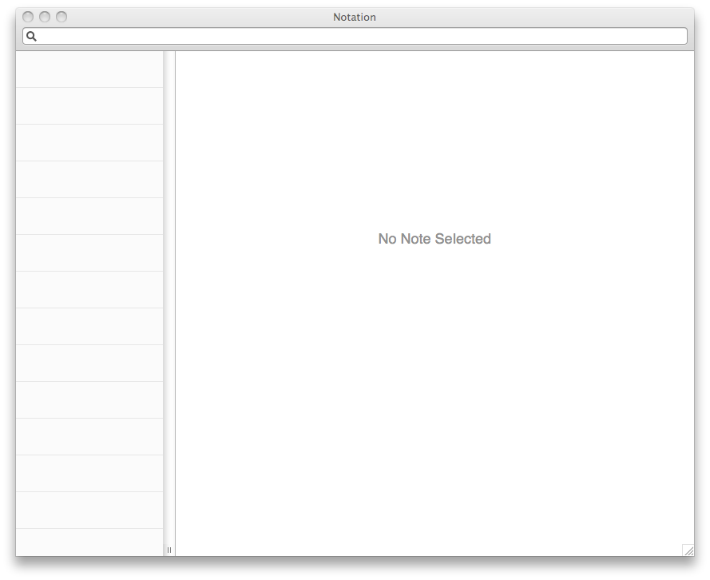
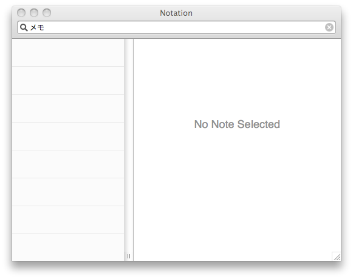
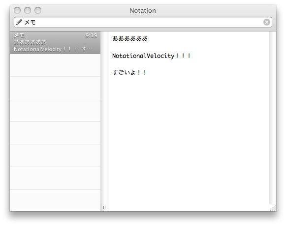
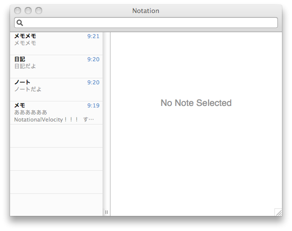
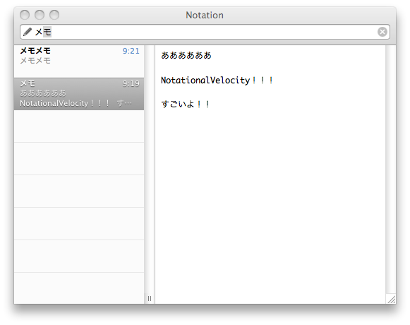

驚的速記！Notational Velocity
最近もっぱら愛用中のノートアプリ、Notational Velocityを紹介します。

Notational Velocityはノートアプリとして必要最低限の機能と革新的なUIが売りです。 キーボードで操作可能なので、慣れるととても速く使うことができます。
ノートアプリで重要なのは「書きたい！」と思った時にすぐ書ける、「あれどこだっけ？」という時にすぐに見つかることです。このアプリはそのどちらも実現できています。
SimpleNoteやDropboxで同期できるのでクラウド環境も備えてます。
使い方
「Cmd + L」で検索フィールドにフォーカスします。 検索フィールドに「メモ」と入力します。

Enterすると、右側のコンテンツ欄に移動します。
作成ステップは
- Cmd + Lで検索フィールドにフォーカス
- タイトルを打って
- Enter
- 中身を打つ

さて、今ここに４つの項目があります。

この状態で「メ」と打ちます

すると、すべてのメモ内を全文検索します。 このままEnterを押すと「メモ」のコンテンツを入力できます。
作成と検索を同じフィールドで行うことができるのが素晴らしいポイント。 検索も同時に行うので重複したメモの存在を減らすことができる。
キーボードで操作可能
たったこれだけの操作で必要なことができます。
| Cmd + L | 検索フィールドにフォーカス |
| Cmd + J | 下のノートに移動 |
| Cmd + K | 上のノートに移動 |
| Tab | ノート一覧からコンテンツ欄へ移動 |
| Cmd + R | リネーム |
| Shift + Cmd + T | タグを編集 |
その他の機能
- iPhoneでは PlainText でDropboxと同期できる
- フォーク版の nvALT ではMarkdownプレビュー機能などがついてる
- リンク機能
- ブックマーク
- タグ
- ソート（タイトル、タグ、更新日、作成日）
デメリット・問題点
- タイトル必須。タイトルを考えないといけない
- フォルダ分けはできない
- もちろん、画像は表示できない
- 複数端末でDropbox同期で同時に起動して使うと、いつの間にかノート消去されてる時がある。Dropboxから戻せるし、同時起動しなければ良いが、ちょっと問題。
プレーンテキストで管理する
色々この系統のアプリを試してきましたが、Notational Velocity は自分の好みにマッチしてます。
Apple Mailのメモは書く時のレスポンスは最高だけど、バグが多い。検索が遅い。 Evernoteは高機能すぎる、重い。
そもそもデータがアプリケーションに依存してしまうのが怖い。 ちょっとメモを見たいだけなのに、わざわざアプリケーションを起動しなければならない。 果たして10年後、20年後もEvernoteは動いているだろうか。
もっとデータを自分で管理したい。 プレーンテキストで保存しておけば、どんなソフトでも読み書きできる。スクリプトを組めば自動化や検索も簡単にできる。
必要最小限で可能性無限のプレーンテキスト、その導入としてNotational Velocityは良いアプリケーションだと思います。